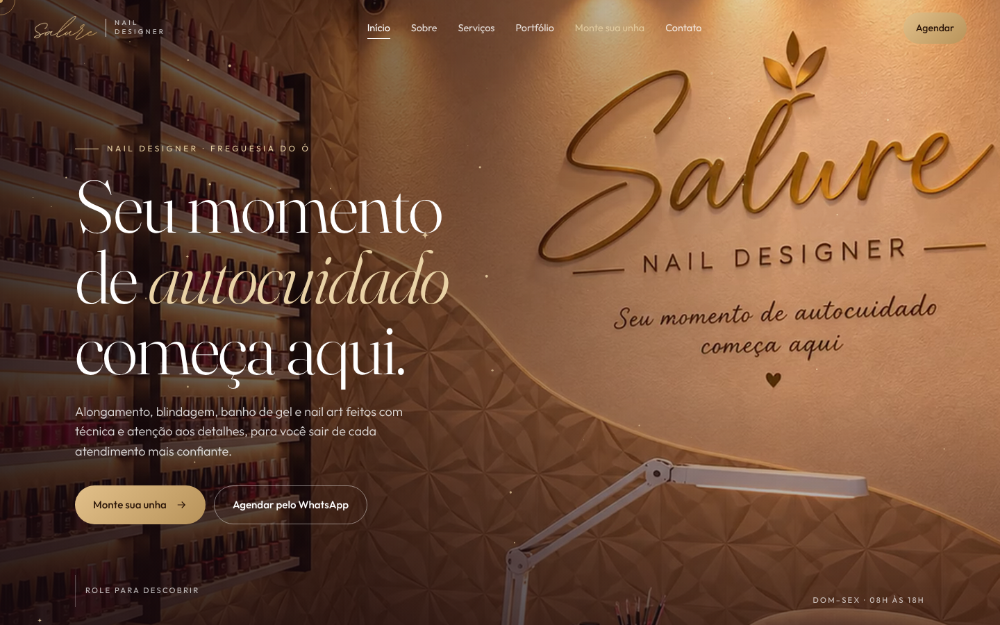

Nortiq
Novo site no ar
Mais um site no ar:
Salure Nails Design.
Nail designer na Freguesia do Ó, em São Paulo. Vídeo, portfólio e um simulador para a cliente montar a unha e pedir pelo WhatsApp.
salurenail.com.br
Monte sua unha
Portfólio
Pedido no WhatsApp
Criado pela
Nortiq
· nortiqtec.com.br
Nortiq
Mais um site
entregue para um cliente.
Site
Portfólio
Simulador
WhatsApp
salurenail.com.br

Nortiq
Seu negócio também pode ter um site assim.
Fale com a Nortiq
nortiqtec.com.br